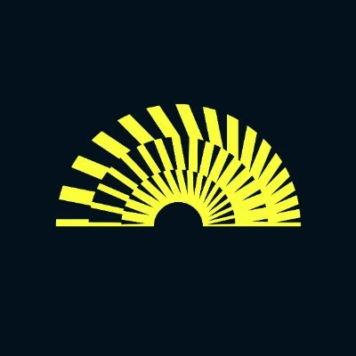

Web3 Campaign Execution · Data Research · Community & Creator Networks
My experience spans Web3 campaign coordination, creator and community activity, on-chain research and analytical product development. I work across both the people and the data behind a project.
Research and analytical product work focused on users, wallets, protocols, ecosystems and observable activity.

NDA-safe internship
deBridge
On-chain data analyst internship · Nov 2025–Feb 2026
Supported private competitor and market research using on-chain data, protocol flows and cross-chain activity analysis. Research details are withheld under NDA.
API-led research tracing wallet activity before and after users interact with a bridge protocol. The analysis identifies which applications users come from and where they go next, providing evidence for potential ecosystem partnerships.
Nansen APIPre/post-bridge behaviourApplication pathwaysPartnership research
Status: research demo · offline; no employment claim
A behavioural research terminal exploring wallet activity, token patterns and blockchain questions. Data science and ML experiments support ongoing research; trained-model capabilities are not presented as verified.
Lead Researcher · research and campaign-intelligence prototype
Web3 research and data prototype studying how products, markets and users behave, with historical campaign records kept separate from fictional or illustrative product fixtures.
Community membership is not presented as guaranteed campaign participation, and the two audiences are not combined into a unique total.
How I work
About Me
My experience brings together Web3 campaigns, community building, data research and product development. I’ve worked on campaign activity with Breshna, SEND and PRINT3R, completed an on-chain analyst internship with deBridge, and built research projects including Aladdin.
I’m looking to contribute to a team where I can take responsibility, apply both my analytical and people-facing experience, and keep developing through practical work.
Education
University of Greenwich
MSc Data Science and IT Application
September 2024 – July 2026
Merit
⭕️La_Crrypt💰₿ Open to analyst roles, research projects and KOL campaigns.